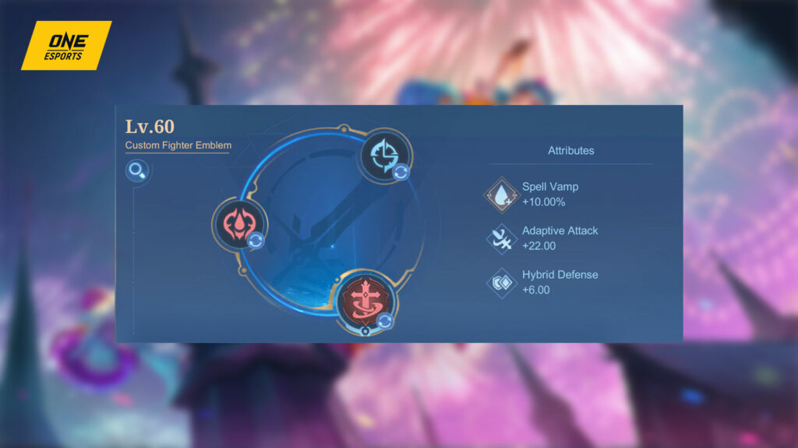
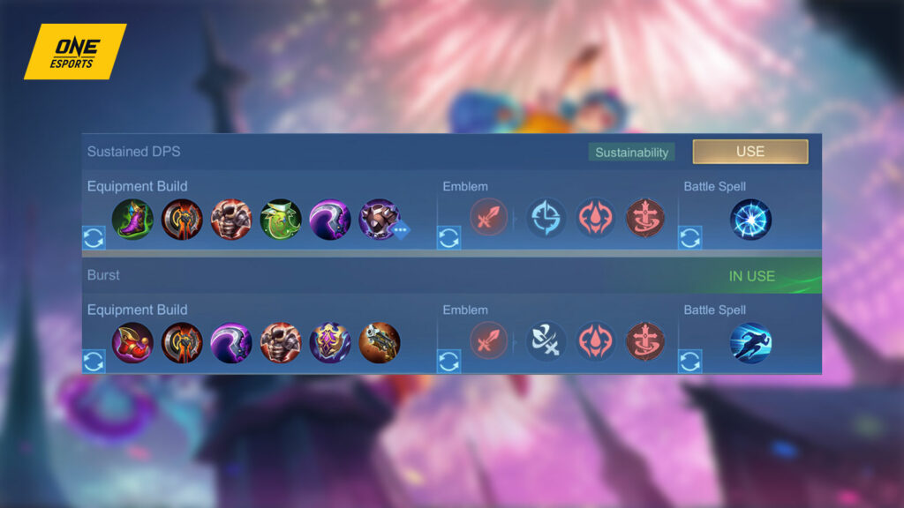
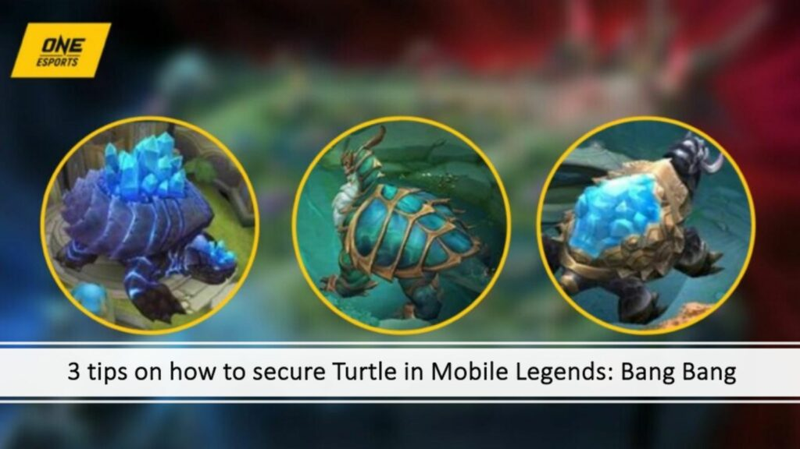

As the EXP laner of the team, Vengeance is a great choice because it helps you survive longer in fights by
reflecting some of the damage you take back to your attackers.
This fits well with the hero’s ability to handle a lot of damage, making her hard to take down.

Credit: ONE Esports
As both the team’s frontliner and damage dealer, opting for the Fighter Emblem is ideal for Cici. This
emblem offers essential stats to enhance her survivability in team fights, including Spell Vamp and
Hybrid Defense.
Regarding talents, prioritize Inspire for the extra Cooldown Reduction and Festival of Blood for Spell
Vamp.
The core talent for Cici should be Brave Smite, as it significantly contributes to her durability during
the laning phase.
It’s easier to trigger since Cici’s skills have low cooldowns and don’t rely on mana, ensuring effective
sustain in battles.
Cici best build

Credit: One Esports
The primary focus when building Cici should be on cooldown reduction and a balance between damage and
durability.
Start by prioritizing War Axe for its cooldown reduction and the added damage synergy with her offensive
skills. Pair this with the Brute Force Breastplate which gives you a solid combination of offense,
defense, and mobility, enhancing your ability to zone enemies out.
As the game progresses into the mid-game, Oracle becomes essential for amplifying the hero’s shield
effects and providing substantial health regeneration. This makes you harder to kill and allows you to
sustain longer in team fights.
Increase your kill potential by purchasing Hunter Strike next. The item offers an extra burst of damage
and mobility, giving her the edge in both chasing down opponents and repositioning during engagements.
Round out your build by getting Blade Armor or Antique Cuirass depending on the enemy composition. Both
items boost your Physical Defense and provide unique effects.
If you want to play more defensively, you can swap the item for Immortality so you can resurrect when
taken down.
Cici best build in Mobile Legends
- Tough Boots
- War Axe
- Bruteforce Breastplate
- Oracle
- Hunter Strike
- Blade Armor or Antique Cuirass
Tips and easy combos to learn
In the laning phase, freeze the lane by positioning yourself at the back of the enemy minion wave,
forcing the opposing EXP laner to get an advantage in positioning.
Utilize Yo-Yo Blitz whenever the enemy hero approaches. If the enemy also has a strong early game, focus
on last-hitting minions without pushing too far to avoid exposing yourself to potential ganks.
Upon reaching level four, prioritize maxing Performer’s Delight and keep an eye on the Turtle spawn on
your side. Contest the Lord and assist the ally jungler in securing it.

Credit: One Esports
Optimize your combo by initially maxing your passive ability, then engaging with Buoyant Bounce and Yo-Yo
Blitz in team fights.
If there are two or more enemies, manually direct the ultimate, Curtain Call, toward the enemy carry
while dealing damage with Yo-Yo Blitz.
Always ensure you have full stacks of Performer’s Delight before entering fights for maximum
effectiveness.